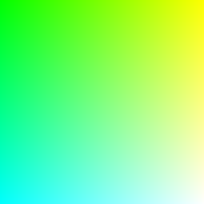
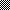

PNG
Installation
-
Add the dependency to your
shard.yml:dependencies: PNG: github: sleepinginsomniac/png -
Run
shards install
Usage
Reading
require "png"
canvas = PNG.read("examples/gradient.png")
canvas.header.color_type # => PNG::ColorType::RGB
canvas[0, 0] # => Bytes[0, 255, 0]Writing
require "png"
canvas = PNG::Canvas.new(255, 255)
0u8.upto(canvas.height - 1) do |y|
0u8.upto(canvas.width - 1) do |x|
canvas[x, y] = {x, 255u8, y}
end
end
PNG.write("examples/gradient.png", canvas)
require "png"
canvas = PNG::Canvas.new(255, 255)
0.upto(canvas.height - 1) do |y|
0.upto(canvas.width - 1) do |x|
hue = (x / canvas.width) * 360.0
value = 1 - (y / canvas.height)
hsv = PNG::HSV.new(hue, 1.0, value)
canvas[x, y] = PNG::RGB(UInt8).from_hsv(hsv)
end
end
PNG.write("examples/test_pattern.png", canvas)
require "png"
# 1-bit black and white
canvas = PNG::Canvas.new(PNG::Header.new(10, 10, bit_depth: 1, color_type: PNG::ColorType::Grayscale))
0.upto(canvas.height - 1) do |y|
0.upto(canvas.width - 1) do |x|
canvas[x, y] = {1u8} if (x + y) % 2 == 0
end
end
PNG.write("examples/1bit_checker.png", canvas)
ColorTypes
All PNG color types and bit depths are supported for reading / writing
| ColorType | 1bit | 2bit | 4bit | 8bit | 16bit | |----------------|------|------|------|------|-------| | Grayscale | r/w | r/w | r/w | r/w | r/w | | TrueColor | r/w | r/w | r/w | r/w | r/w | | Indexed | | | | r/w | | | GrayscaleAlpha | r/w | r/w | r/w | r/w | r/w | | TrueColorAlpha | r/w | r/w | r/w | r/w | r/w |
FilterMethods
| Name | Support | |---------|---------| | None | r/w | | Sub | r/w | | Up | r/w | | Average | r/w | | Paeth | r/w |
Interlacing
| Name | | |-------|-----| | None | r/w | | Adam7 | r/w |
Ancillary Chunks
| Name | Support | |------|---------| | cHRM | - | | gAMA | Yes | | iCCP | - | | sBIT | - | | sRGB | - | | bKGD | Yes | | hIST | - | | tRNS | - | | pHYs | Yes | | sPLT | - | | tIME | Yes | | iTXt | - | | tEXt | - | | zTXt | - |
Contributing
- Fork it (https://github.com/sleepinginsomniac/png/fork)
- Create your feature branch (
git checkout -b my-new-feature) - Commit your changes (
git commit -am 'Add some feature') - Push to the branch (
git push origin my-new-feature) - Create a new Pull Request
Contributors
- Alex Clink - creator and maintainer